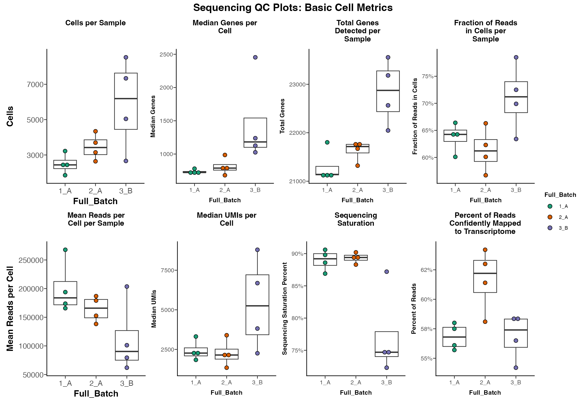
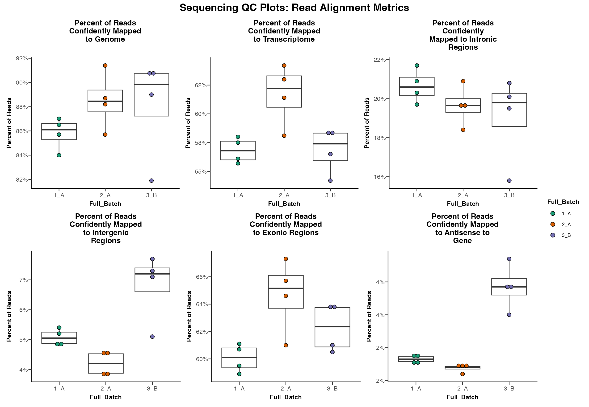
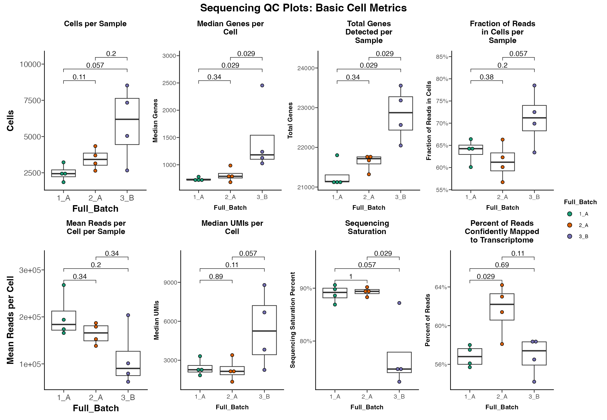

Plotting #3: Sequencing QC Plots/Analysis
Compiled: December 01, 2021
Source:vignettes/Sequencing_QC_Plots.Rmd
Sequencing_QC_Plots.RmdPlotting Sequencing/Alignment Metrics
In addition to other QC metrics previously discussed it can also be helpful to plot the metrics generated during alignment of sequencing data to see if there are differences that might arise as result of sequencing differences as opposed to biological differences.
For this tutorial, I will be utilizing de-identified example data from my own experience but I will walk through process for using your own data.
Loading Data
Before we can plot these metrics we first need to import raw data. ### Accepted Data Types
These functions currently only work with data from 10X Genomics processed via Cell Ranger. If there is interest in adapting to other platforms I’d be happy to entertain PRs.
Data Location
Inside the output folder from Cell Ranger count is a file called “metrics_summary” which contains the metrics normally displayed in the html summary. See abbreviated example below.
Parent_Directory
├── sample_01
│ └── outs
│ └── filtered_feature_bc_matrix/
│ └── raw_feature_bc_matrix/
│ └── web_summary.html
│ └── metrics_summary.csv
└── sample_02
│ └── outs
│ └── filtered_feature_bc_matrix/
│ └── raw_feature_bc_matrix/
│ └── web_summary.html
│ └── metrics_summary.csv
└── sample_03NOTE: If the path to these files on your system is different that the default 10X path be sure to specify the secondary_path param and set default_10X = FALSE when importing data.
Read Data
We can read all metrics files within a given parent directory using the Read_Metrics_10X function.
raw_metrics <- Read_Mestrics_10X(base_path = "path/to/parent/directory/", default_10X = TRUE)
head(raw_metrics)The result of this function will be a data.frame with one row per library.
| sample_id | Estimated_Number_of_Cells | Mean_Reads_per_Cell | Median_Genes_per_Cell | Number_of_Reads | Valid_Barcodes | Sequencing_Saturation | Q30_Bases_in_Barcode | Q30_Bases_in_RNA_Read | Q30_Bases_in_UMI | Reads_Mapped_to_Genome | Reads_Mapped_Confidently_to_Genome | Reads_Mapped_Confidently_to_Intergenic_Regions | Reads_Mapped_Confidently_to_Intronic_Regions | Reads_Mapped_Confidently_to_Exonic_Regions | Reads_Mapped_Confidently_to_Transcriptome | Reads_Mapped_Antisense_to_Gene | Fraction_Reads_in_Cells | Total_Genes_Detected | Median_UMI_Counts_per_Cell |
|---|---|---|---|---|---|---|---|---|---|---|---|---|---|---|---|---|---|---|---|
| sample_1 | 2526 | 193933 | 724 | 489875507 | 96.3% | 89.8% | 96.0% | 94.2% | 95.7% | 95.9% | 86.5% | 5.2% | 21.7% | 59.5% | 56.1% | 2.3% | 60.1% | 21105 | 1840 |
| sample_2 | 2642 | 179146 | 986 | 473302676 | 97.7% | 88.3% | 95.9% | 94.3% | 95.6% | 95.8% | 88.7% | 4.6% | 18.4% | 65.7% | 63.0% | 1.7% | 56.7% | 21321 | 3394 |
| sample_3 | 7337 | 79420 | 2454 | 582707755 | 93.5% | 72.3% | 96.5% | 94.8% | 96.2% | 95.5% | 90.8% | 7.1% | 20.1% | 63.7% | 58.3% | 4.3% | 72.5% | 23556 | 6685 |
| sample_4 | 2352 | 165755 | 722 | 389854975 | 97.0% | 86.9% | 96.0% | 94.1% | 95.6% | 95.0% | 84.0% | 4.8% | 20.3% | 58.9% | 55.7% | 2.2% | 66.4% | 21141 | 2360 |
| sample_5 | 3697 | 152621 | 794 | 564238318 | 97.7% | 89.2% | 96.0% | 94.3% | 95.7% | 96.3% | 85.7% | 3.8% | 20.9% | 61.0% | 58.1% | 1.9% | 66.3% | 21764 | 2224 |
| sample_6 | 5043 | 101180 | 1126 | 510250215 | 94.5% | 74.6% | 96.4% | 94.8% | 96.0% | 96.1% | 81.9% | 5.1% | 15.8% | 61.0% | 56.5% | 3.5% | 78.5% | 22565 | 8792 |
Optional parameters
Similarly to the scCustomize functions for reading raw count matrices (See Read & Write Data Functions Vignette) there are a few optional parameters for Read_Metrics_10X.
-
secondary_path/default_10Xtells the function how to navigate from the parent directory (base_path) to the “metrics_summary.csv” files.- If the directory specified is directly from Cell Ranger output or has an identical structure (see above; parent/library_name/outs/files) then user can specify
default_10X = TRUEand function will find required files. - If structure is different then user must supply
secondary_path.
- If all files are in one directory simply supply
secondary_path = "".
- If the directory specified is directly from Cell Ranger output or has an identical structure (see above; parent/library_name/outs/files) then user can specify
-
lib_listif only a subset of libraries are desired then user can supply the names of those libraries (sub-directories) to thelib_listparameter to limit which files are read in. Default is NULL and will read all samples from parent directory. -
lib_namesHow to name files in output data.frame. Default will use sub-directory names to label the samples. Alternatively can provide a vector a sample/library names to use instead.
Add Meta Data
In order to make the resulting plots more meaningful we need to added corresponding sample level meta data.
NOTE: Make sure that one column in your meta data data.frame matches the “sample_id” column to metrics data.frame so that they are properly joined.
head(meta_metrics)| sample_id | Seq_Batch | Exp_Batch | Full_Batch |
|---|---|---|---|
| sample_1 | A | 1 | 1_A |
| sample_2 | A | 2 | 2_A |
| sample_3 | B | 3 | 3_B |
| sample_4 | A | 1 | 1_A |
| sample_5 | A | 2 | 2_A |
| sample_6 | B | 3 | 3_B |
Now we join the two data.frames before plotting.
metrics_final <- right_join(raw_metrics, meta_metrics)## Joining, by = "sample_id"Plotting
In total there are 15 Sequencing QC plotting functions. See Reference Manual for full details.
However, to simplify plotting there are also two wrapper functions which will return patchwork layouts of several of these functions in a single plot.
Basic Metrics Summary
A set of basic metrics can be plotted using Seq_QC_Plot_Basic_Combined
Seq_QC_Plot_Basic_Combined(metrics_dataframe = metrics_final, plot_by = "Full_Batch")
Alignment Metrics Summary
A set of alignment-based metrics can be plotted using Seq_QC_Plot_Alignment_Combined
Seq_QC_Plot_Alignment_Combined(metrics_dataframe = metrics_final, plot_by = "Full_Batch")
Basic Statistics
All of the Seq_QC_Plot_... functions also contain parameter to calculate significance between all groups using ggpubr::stat_compare_means.
NOTE: See function help pages and ggpubr for more info to make sure the right test is being used for your data.
Seq_QC_Plot_Basic_Combined(metrics_dataframe = metrics_final, plot_by = "Full_Batch", significance = T)